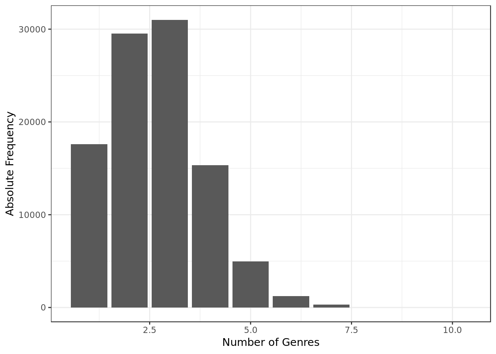
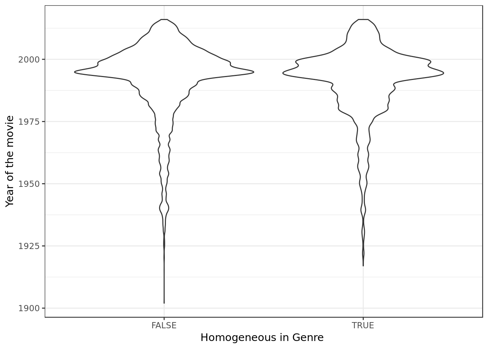
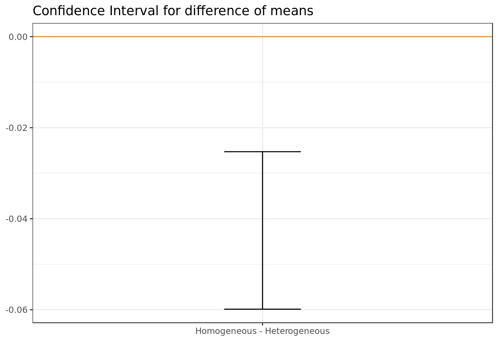
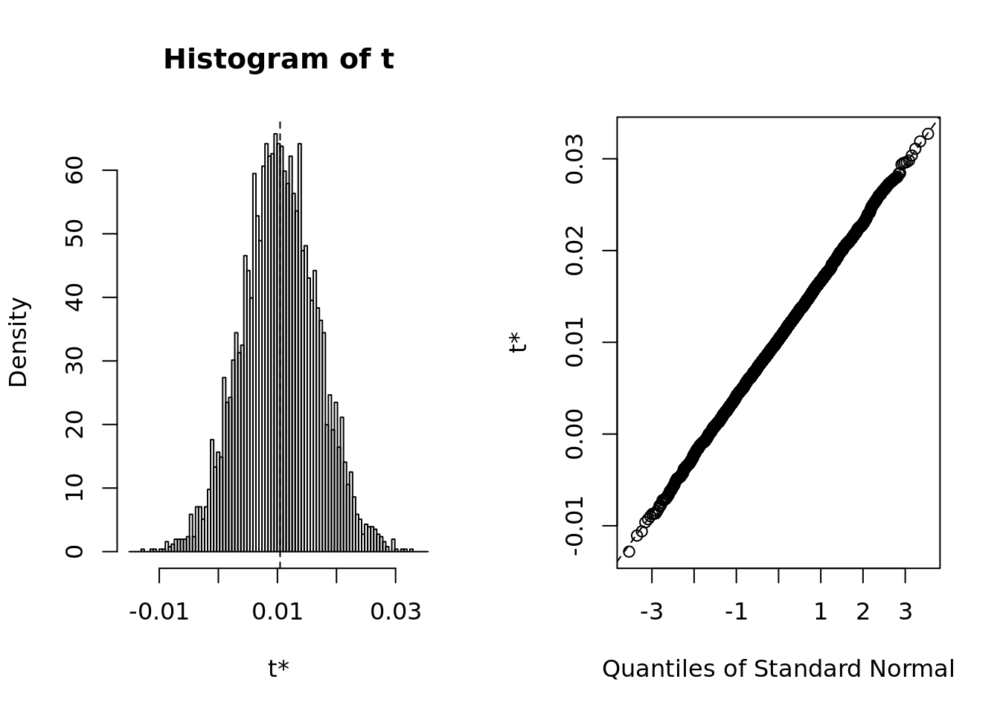
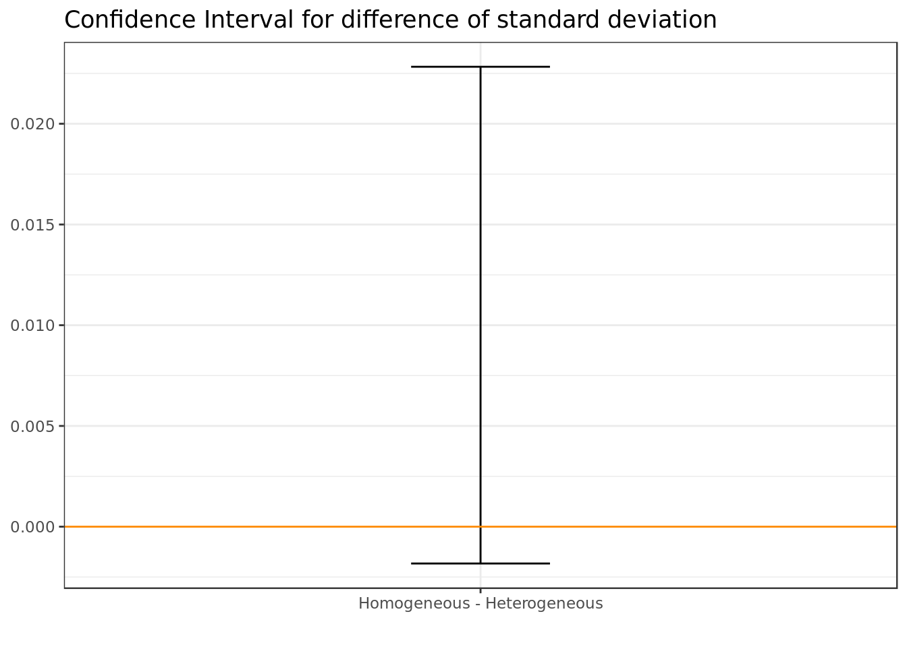
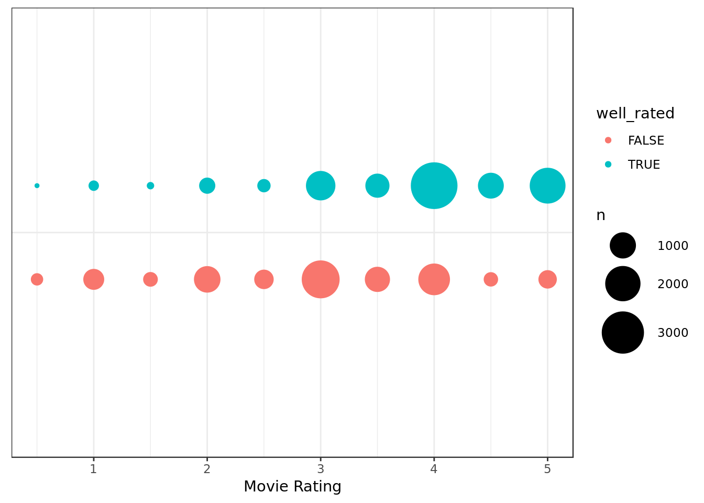
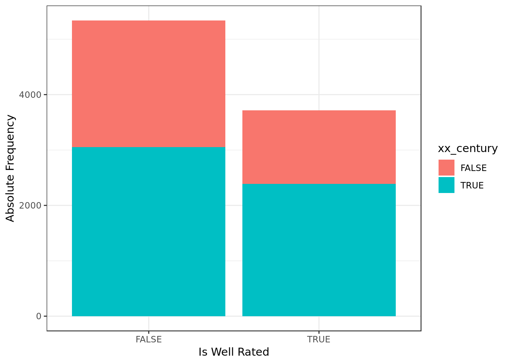
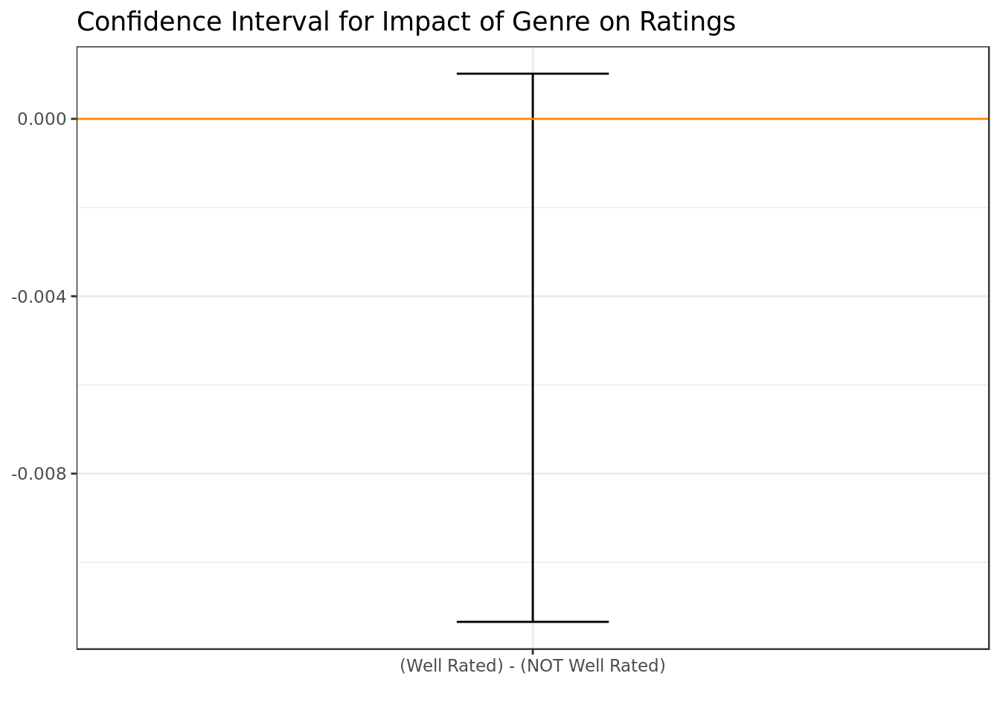
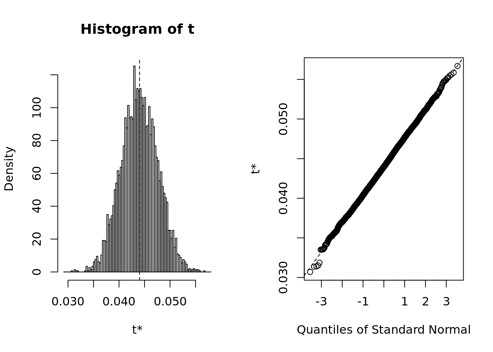
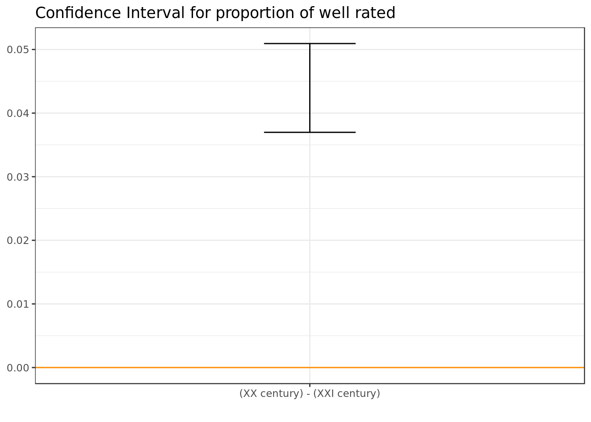

Analysis on MovieLens dataset with bootstrap
Introduction
This report is an analysis on the dataset movielens which can be found in full here. The code, data and a description of the variables used in this report can be found in the original repository
Data Overview
readr::read_csv(here::here("evidences/lens_movies.csv"),
progress = FALSE,
col_types = cols(
movieId = col_integer(),
title = col_character(),
genres = col_character()
)) %>%
group_by(movieId) %>%
mutate(year = as.numeric(sub("\\).*", "",sub(".*\\(", "", title))),
num_genres = length(as.list(strsplit(genres,'|',fixed = TRUE))[[1]]),
homogeneous = num_genres == 1, # Deriving homogeneity
xx_century = year <= 2000
) %>%
na.omit() %>%
ungroup() -> movies
readr::read_csv(here::here("evidences/ratings.csv"),
progress = FALSE,
col_types = cols(
userId = col_integer(),
movieId = col_integer(),
rating = col_double(),
timestamp = col_integer()
)) %>%
na.omit() -> ratingsdplyr::inner_join(
movies,
ratings,
by="movieId") -> data
data %>%
group_by(movieId) %>%
summarise(median_rating = median(rating), # Deriving whether a movies is well rated
well_rated = median_rating > 3.5) -> summarised
dplyr::inner_join(
summarised,
data,
by="movieId") -> data
data %>%
glimpse()## Observations: 99,997
## Variables: 12
## $ movieId <int> 1, 1, 1, 1, 1, 1, 1, 1, 1, 1, 1, 1, 1, 1, 1, 1, 1,…
## $ median_rating <dbl> 4, 4, 4, 4, 4, 4, 4, 4, 4, 4, 4, 4, 4, 4, 4, 4, 4,…
## $ well_rated <lgl> TRUE, TRUE, TRUE, TRUE, TRUE, TRUE, TRUE, TRUE, TR…
## $ title <chr> "Toy Story (1995)", "Toy Story (1995)", "Toy Story…
## $ genres <chr> "Adventure|Animation|Children|Comedy|Fantasy", "Ad…
## $ year <dbl> 1995, 1995, 1995, 1995, 1995, 1995, 1995, 1995, 19…
## $ num_genres <int> 5, 5, 5, 5, 5, 5, 5, 5, 5, 5, 5, 5, 5, 5, 5, 5, 5,…
## $ homogeneous <lgl> FALSE, FALSE, FALSE, FALSE, FALSE, FALSE, FALSE, F…
## $ xx_century <lgl> TRUE, TRUE, TRUE, TRUE, TRUE, TRUE, TRUE, TRUE, TR…
## $ userId <int> 7, 9, 13, 15, 19, 20, 23, 26, 30, 37, 43, 44, 47, …
## $ rating <dbl> 3.0, 4.0, 5.0, 2.0, 3.0, 3.5, 3.0, 5.0, 4.0, 4.0, …
## $ timestamp <int> 851866703, 938629179, 1331380058, 997938310, 85519…movies %>%
filter(title == "Hamlet (2000)")## # A tibble: 2 x 7
## movieId title genres year num_genres homogeneous xx_century
## <int> <chr> <chr> <dbl> <int> <lgl> <lgl>
## 1 3598 Hamlet (… Crime|Drama|Ro… 2000 4 FALSE TRUE
## 2 65665 Hamlet (… Drama 2000 1 TRUE TRUEdata %>%
filter(movieId != 3598) -> data- Looks like Hamlet was included twice. As Hamlet is clearly a Drama we’re gonna remove the entries that say otherwise.
data %>%
group_by(movieId) %>%
slice(1) %>%
ggplot(aes(year)) +
geom_bar() +
labs(x="Movie Year",
y="Absolute Frequency")
- There’s a whole lot of movies from the 2000’s.
- There’s movies going as far as the first decade of the 1900’s.
data %>%
ggplot(aes(num_genres)) +
geom_bar() +
labs(x="Number of Genres",
y="Absolute Frequency")
- Most movies have 2 or 3 genres.
data %>%
ggplot(aes(rating,y=..prop..)) +
geom_bar() +
labs(x="Movie Rating",
y="Relative Frequency")
- There’s a lot of generous reviews, with 4 stars composing almost 30% of the ratings.
Help on Confidence Intervals
Throughout this report we will employ Confidence Intervals of the difference of two distinct values, let’s call them A and B for instance.This gives us three possibilities:
- The C.I of A - B is exclusively above 0
- A is greater than B
- The C.I of A - B is exclusively above 0
- A is greater than B
- The C.I of A - B contains 0
- We can’t say which is greater
Homogeneity in Genre
- A movie will be considered homogeneous (in terms of genre) if the movie is classified under a single genre. Therefore, any movie with more than one genre will not be considered homogeneous.
Data Sample Preview
data %>%
ggplot(aes(homogeneous,rating)) +
geom_violin() +
labs(x="Homogeneous in Genre ",
y="Movie Rating")- The plot indicates a difference on the average rating of the two groups. The heterogeneous movies seem to have a higher number of better ratings as far as samples go.
- In terms of dispersion the ratings seem to be similarly distributed across both groups as far as samples go.
data %>%
ggplot(aes(homogeneous,year)) +
geom_violin() +
labs(x="Homogeneous in Genre ",
y="Year of the movie")
- The Homogeneous group seems to have more movies around the 1980s
- The Heterogeneous group has the oldest movies.
Is the average rating affected by genre homogeneity?
- We will use as estimator the unpaired difference of median ratings (TRUE - FALSE):
- The median rating of the well rated minus the median rating of the not well rated.
meu_theta <- function(x, i) {
x %>%
slice(i) %>%
group_by(homogeneous) %>%
summarise(average = mean(rating)) -> y
result <- y[y$homogeneous == TRUE,]$average -
y[y$homogeneous == FALSE,]$average
return(result)
}
mean.boot <- boot(data = data,
statistic = meu_theta,
R = 5000)
plot(mean.boot)
- The bootstrap summary shows evidence of normality both in terms of qqplot and histogram. It’s safe to say that the basic method is appropriate.
result_mean <- boot.ci(boot.out = mean.boot,
conf = 0.95,
type = "basic")
result_mean## BOOTSTRAP CONFIDENCE INTERVAL CALCULATIONS
## Based on 5000 bootstrap replicates
##
## CALL :
## boot.ci(boot.out = mean.boot, conf = 0.95, type = "basic")
##
## Intervals :
## Level Basic
## 95% (-0.0599, -0.0253 )
## Calculations and Intervals on Original ScaleX2.5. = c(result_mean$basic[4])
X97.5. = c(result_mean$basic[5])
mean.diff = data.frame(X2.5.,X97.5.)
mean.diff %>%
ggplot(aes(x = "Homogeneous - Heterogeneous",ymin = X2.5., ymax = X97.5.)) +
geom_errorbar(width = .2) +
geom_hline(yintercept = 0, colour = "darkorange") +
labs(x="") +
ggtitle("Confidence Interval for difference of means")
There’s evidence at 95% of confidence that heterogeneous movies are significantly better rated than the Homogeneous movies.
The difference in means although significant in statistical terms is very small in practical terms and therefore is not relevant (doesn’t amount to much in terms of magnitude).
Aparently staying faithful to the same concept all the time is counter productive. One could argue that to be truly complete a movie should dab into more than one aspect of the human psyche. This makes sense when we think about Chaplin, whose best movies not only made us laugh but also dared from time to time to make us cry or make us think.
Is the rating’s dispersion affected by homogeneity in genre?
- We will use as estimator the unpaired difference of the standard deviations (TRUE - FALSE):
- The rating’s standard deviation of the homogeneous (in genre) minus the rating’s standard deviation of the heterogeneous (in genre).
meu_theta <- function(x, i) {
x %>%
slice(i) %>%
group_by(homogeneous) %>%
summarise(deviation = sd(rating)) -> y
result <- y[y$homogeneous == TRUE,]$deviation -
y[y$homogeneous == FALSE,]$deviation
return(result)
}
deviation.boot <- boot(data = data,
statistic = meu_theta,
R = 5000)
plot(deviation.boot)
- The bootstrap summary shows evidence of normality both in terms of qqplot and histogram. It’s safe to say that the basic method is appropriate.
result_deviation <- boot.ci(boot.out = deviation.boot,
conf = 0.95,
type = "basic")
result_deviation## BOOTSTRAP CONFIDENCE INTERVAL CALCULATIONS
## Based on 5000 bootstrap replicates
##
## CALL :
## boot.ci(boot.out = deviation.boot, conf = 0.95, type = "basic")
##
## Intervals :
## Level Basic
## 95% (-0.0018, 0.0228 )
## Calculations and Intervals on Original ScaleX2.5. = c(result_deviation$basic[4])
X97.5. = c(result_deviation$basic[5])
sd.diff = data.frame(X2.5.,X97.5.)
sd.diff %>%
ggplot(aes(x = "Homogeneous - Heterogeneous",ymin = X2.5., ymax = X97.5.)) +
geom_errorbar(width = .2) +
geom_hline(yintercept = 0, colour = "darkorange") +
labs(title="Confidence Interval for difference of standard deviation", x="") 
- There’s no significant difference at 95% of confidence in terms of dispersion between the ratings of heterogeneous and homogeneous movies.
Across homogeneous and heterogeneous movies we could see the same central tendency around 4 stars. We must assume that this has more to do with the nature of how the people rate (extremely positive and extremely bad rates rare, positive ratings more common), rather than to do with whether a movie is homogeneneous in genre.
Is the movie well rated
- Where our analysis regards impact of genre we shall consider only the movies homogeneous in terms of genre, we do so to have a clearer picture of the effect of the different genres.
- Movies are considered well rated when they have been rated above 2.5 stars in terms of median.
data %>%
filter(homogeneous) %>%
mutate(genres = as.factor(genres)) -> data_homogenData Sample Preview
data_homogen %>%
ggplot(aes("",rating,
group=well_rated,
color=well_rated)) +
geom_count(position = position_dodge(width = 0.5)) +
coord_flip() +
labs(y="Movie Rating",x="") +
theme(axis.title.y=element_blank(),
axis.text.y=element_blank(),
axis.ticks.y=element_blank()) +
scale_size(range = c(1,15)) 
- Whether the movie is well rated seems to have an impact on how the ratings are distributed, whether it’s significant remains to be seen.
data_homogen %>%
ggplot(aes(genres,rating,
group=genres,
color=well_rated)) +
geom_count() +
coord_flip() +
facet_grid(~ well_rated) +
theme(strip.background = element_blank(),
strip.text.x = element_blank()) +
labs(y="Movie Rating", x="Movie Genre")- The impact of the genre on the ratings apparently remains similar across movies that were well rated and movies that were not, the aforementioned is in terms of sample.
data %>%
group_by(movieId) %>%
slice(1) %>%
ggplot(aes(x=well_rated,
fill=xx_century)) +
geom_bar() +
labs(x="Is Well Rated",
y="Absolute Frequency")
- In terms of sample movies from the XX century seem to have a higher proportion of well rated movies.
Is the impact of the genre on the ratings affected by whether the movie is well rated?
- We will use as estimator the unpaired difference of the R2 of genre against ratings (TRUE - FALSE): The R2 of the well rated minus the R2 of the not well rated.
- The R2 in this case represents how much of the variation in the ratings can be explained by the genre.
meu_theta <- function(x, i) {
x %>%
slice(i) %>%
filter(well_rated) -> d1
x %>%
slice(i) %>%
filter(!well_rated) -> d2
fit1 = lm(rating ~ genres, data=d1)
fit2 = lm(rating ~ genres, data=d2)
return(summary(fit1)$r.square - summary(fit2)$r.square)
}
r2.boot <- boot(data = data_homogen,
statistic = meu_theta,
R = 5000)
plot(r2.boot)- The bootstrap summary shows evidence of normality both in terms of qqplot and histogram. It’s safe to say that the basic method is appropriate.
result_r2 <- boot.ci(boot.out = r2.boot,
conf = 0.95,
type = "basic")
result_r2## BOOTSTRAP CONFIDENCE INTERVAL CALCULATIONS
## Based on 5000 bootstrap replicates
##
## CALL :
## boot.ci(boot.out = r2.boot, conf = 0.95, type = "basic")
##
## Intervals :
## Level Basic
## 95% (-0.0113, 0.0010 )
## Calculations and Intervals on Original ScaleX2.5. = c(result_r2$basic[4])
X97.5. = c(result_r2$basic[5])
r2.diff = data.frame(X2.5.,X97.5.)
r2.diff %>%
ggplot(aes(x = "(Well Rated) - (NOT Well Rated)",ymin = X2.5., ymax = X97.5.)) +
geom_errorbar(width = .2) +
geom_hline(yintercept = 0, colour = "darkorange") +
labs(x="") +
ggtitle("Confidence Interval for Impact of Genre on Ratings")
- There’s no evidence of a significant difference at 95% of confidence in how much the genre impacts the ratings when we put side by side the movies whom were well rated and the ones whom weren’t.
- This is in accordance to what we previewed in the sample.
As one would expect whether the movie is objectively bad or not should not have to do with the movie genre unless people are biased towards a certain genre. It seems that people’s bias towards certain genres didn’t play much of a role, a happy surprise to be honest.
Is there a difference in the proportion of well rated movies when we compare movies from XX and XXI century?
- We will use as estimator the unpaired difference of the proportion of well rated (TRUE - FALSE):
- The proportion of well rated of movies from the XX century minus the proportion of well rated of movies from the XXI century.
meu_theta <- function(x, i) {
x %>%
slice(i) -> d
d %>%
group_by(xx_century) %>%
filter(well_rated) %>%
summarise(n = n()) -> y
d %>%
group_by(xx_century) %>%
summarise(n = n()) -> total
prop1 <- y[y$xx_century == TRUE,]$n / total[total$xx_century == TRUE,]$n
prop2 <- y[y$xx_century == FALSE,]$n / total[total$xx_century == FALSE,]$n
return(prop1 - prop2)
}
proport.boot <- boot(data = data,
statistic = meu_theta,
R = 5000)
plot(proport.boot)
- The bootstrap summary shows evidence of normality both in terms of qqplot and histogram. It’s safe to say that the basic method is appropriate.
result_proport <- boot.ci(boot.out = proport.boot,
conf = 0.95,
type = "basic")
result_proport## BOOTSTRAP CONFIDENCE INTERVAL CALCULATIONS
## Based on 5000 bootstrap replicates
##
## CALL :
## boot.ci(boot.out = proport.boot, conf = 0.95, type = "basic")
##
## Intervals :
## Level Basic
## 95% ( 0.0370, 0.0509 )
## Calculations and Intervals on Original ScaleX2.5. = c(result_proport$basic[4])
X97.5. = c(result_proport$basic[5])
prop.diff = data.frame(X2.5.,X97.5.)
prop.diff %>%
ggplot(aes(x = "(XX century) - (XXI century)",ymin = X2.5., ymax = X97.5.)) +
geom_errorbar(width = .2) +
geom_hline(yintercept = 0, colour = "darkorange") +
labs(x="") +
ggtitle("Confidence Interval for proportion of well rated")
There’s significant evidence at 95% of confidence, which indicates that movies from the XX century have a higher proportion of well rated movies in terms of inference as well.
The difference in proportions although significant in statistical terms is very small in practical terms and therefore is not relevant (doesn’t amount to much in terms of magnitude).
The XX century has had its fair share of awful movies, however it’s natural that most of the forgettable movies don’t make their way into our minds and datasets. The bad movies from the XXI century are still fresh on our minds and our datasets. For this reason it’s understandable that there are less well rated movies in the group of the XXI century.